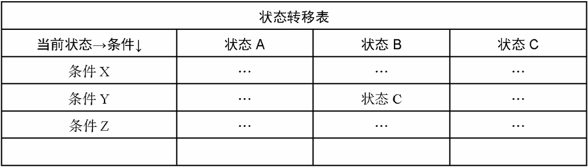

其实还有另外一种实现状态机的方法，这种方法的核心是基于表驱动的。我们可以在表中很清楚地看到下一个状态是由当前状态和行为共同决定的。这样一来，我们就可以在表中查找状态，而不必定义很多条件分支，如图16-6所示。

图 16-6
刚好GitHub上有一个对应的库实现，通过这个库，可以很方便地创建出FSM：
var fsm = StateMachine.create({
initial: 'off',
events: [
{ name: 'buttonWasPressed', from: 'off', to: 'on' },
{ name: 'buttonWasPressed', from: 'on', to: 'off' }
],
callbacks: {
onbuttonWasPressed: function( event, from, to ){
console.log( arguments );
}
},
error: function( eventName, from, to, args, errorCode, errorMessage ) {
console.log( arguments ); // 从一种状态试图切换到一种不可能到达的状态的时候
}
});
button.onclick = function(){
fsm.buttonWasPressed();
}
关于这个库的更多内容这里不再赘述，有兴趣的同学可以前往：https://github.com/jakesgordon/javascript-state-machine学习。